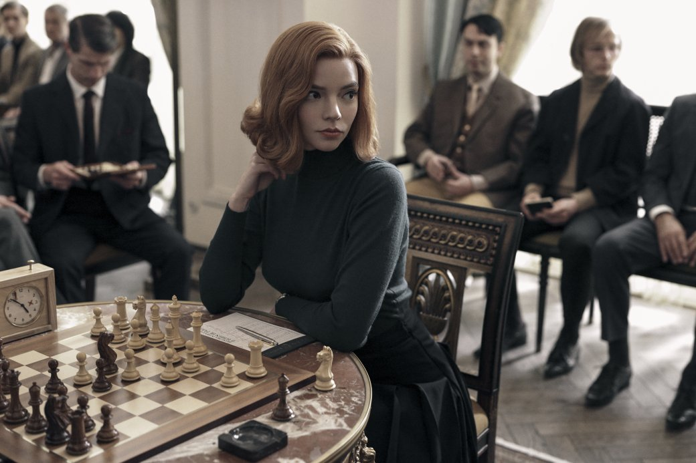

«Ход королевы» — драматический мини-сериал 2020 года от Netflix, основанный на одноименном романе Уолтера Тевиса. Сюжет рассказывает о жизни талантливой шахматистки Бет Хармон, которая с детства воспитывалась в приюте и открыла для себя мир шахмат. Сериал показывает борьбу Бет с личными демонами, зависимостями и поиском своего места в мужском мире профессиональных шахмат. Жанры: драма, биография, спорт. Сериал получил признание критиков за глубокую психологическую проработку персонажей, стильную визуализацию шахматных партий и яркую актёрскую игру.
Ход королевы
Бет Хармон
Бет — гениальная шахматистка и главная героиня сериала. С детства обладающая выдающимися аналитическими способностями, она быстро овладевает шахматной игрой и становится национальной чемпионкой. Бет — сложная и противоречивая личность: с одной стороны, она умна, решительна и бесстрашна, а с другой — борется с внутренними страхами и зависимостями. Её характер сочетает хладнокровие и эмоциональность, стратегическое мышление и личную уязвимость. Бет Хармон олицетворяет силу воли, стремление к совершенству и внутреннюю борьбу каждого, кто стремится выйти за рамки обычного.
Арка персонажа
- Начало: Бет открывает мир шахмат в детстве и учится концентрироваться и мыслить стратегически
- Развитие: Столкновение с личными проблемами, зависимостью и социальными ограничениями, а также участие в соревнованиях, формирует её как личность
- Кульминация: Победа на мировом турнире и признание её таланта
- Заключение: Принятие себя, своих слабостей и силы, осознание ценности поддержки и дружбы
Цитаты
«Шахматы — это борьба с самим собой.»
«Иногда, чтобы победить, нужно выйти за пределы правил.»
«Я играю не против людей. Я играю против своих страхов.»
«В шахматах, как и в жизни, нельзя быть слишком самоуверенной.»
Символика
Сериал полон символики, которая усиливает сюжет и характер героев:
- Шахматы: главный символ стратегии, логики и внутренней борьбы
- Шахматная доска: символ пути жизни, где каждый ход имеет значение
- Таблетки и алкоголь: отражают зависимость Бет и её психологические трудности
- Свет и тень: визуально передают внутренние конфликты и моменты прозрения
- Цвета костюмов Бет: от холодных синих оттенков в детстве до ярких тонов в финале — символ её роста и уверенности